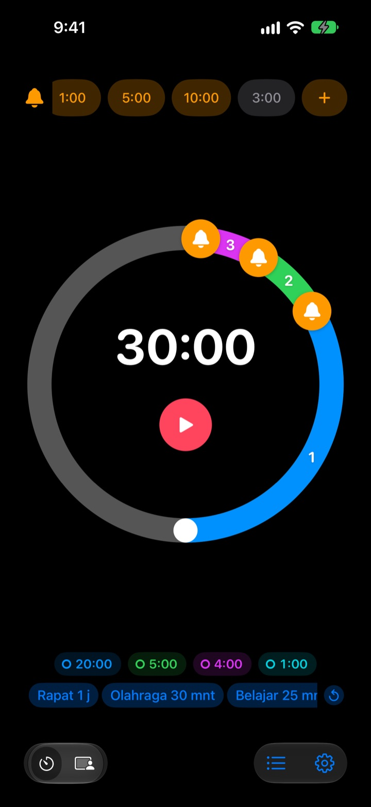
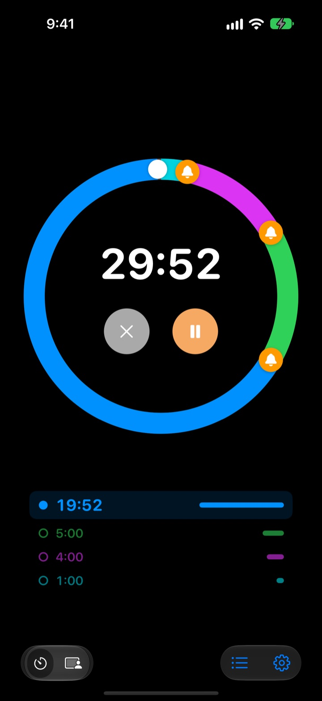
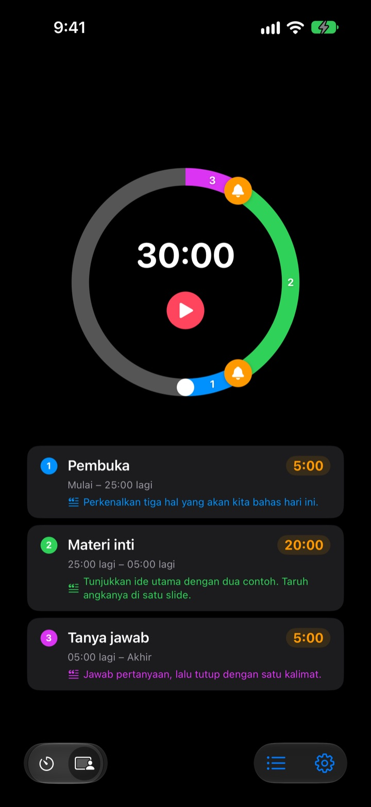
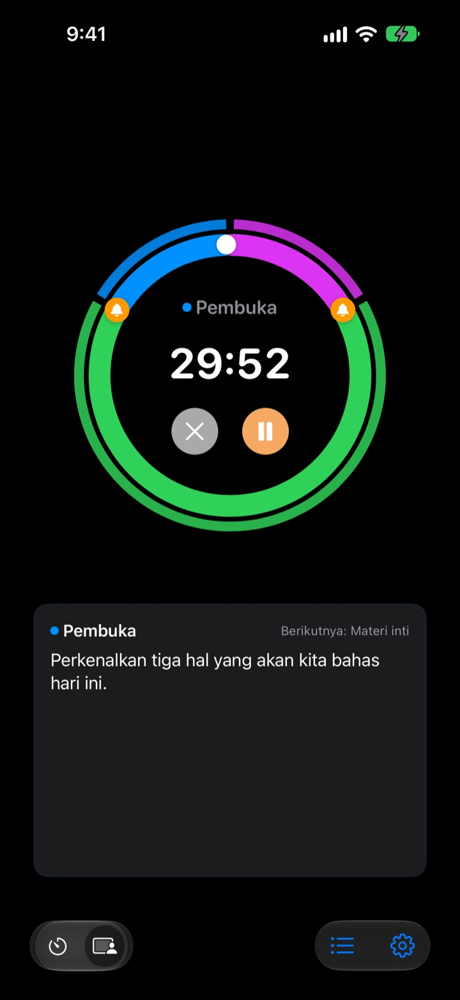

Bukan setelah selesai,
tapi sebelumnya
5 menit sebelum presentasi berakhir, 3 menit sebelum rapat ditutup. Rereminder memberi tanda di setiap titik yang Anda pilih, jadi Anda tak perlu terus melirik jam.
Peringatan awal gratis tanpa batas. Untuk iPhone, Apple Watch, dan Mac.

Coba langsung di sini
Pilih durasi dan peringatan, lalu tekan tombol merah. Satu menit berlalu dalam satu detik, dan setiap peringatan berbunyi tepat waktunya.
Pernah timer berbunyi saat semuanya sudah terlambat?
Timer biasa baru berbunyi di angka nol. Presentasi habis sebelum sampai kesimpulan, kelas selesai tanpa rangkuman, dan rapat molor ke jadwal berikutnya tanpa keputusan. Yang Anda perlukan bukan tanda bahwa waktu sudah habis, tapi tanda saat masih ada waktu untuk menutup.
Diingatkan sebelum selesai, sebanyak yang Anda mau
Seret lonceng di cakram ke 10, 5, atau 1 menit sebelum selesai, atau ke titik lain. Tidak ada batas, dan setiap peringatan bisa membawa pesan sendiri, misalnya "Tutup slide".
Saat layar mati, sisa waktu tetap terlihat di Layar Terkunci dan Dynamic Island, dan Apple Watch mengetuk pergelangan tangan Anda.

Bagi presentasi menjadi beberapa bagian
Pembukaan 5 menit, isi 20 menit, tanya jawab 5 menit. Beri setiap bagian nama dan naskah. Setiap kali berganti bagian, Anda diingatkan dengan nama bagian itu, jadi pembagian waktu terjaga dengan sendirinya. (Pro)

Apa yang harus diucapkan, ada di layar
Selama berjalan, naskah bagian saat ini dan bagian berikutnya tampil besar. Lewat dari nol, hitungan terus berjalan sehingga Anda tahu seberapa lama Anda melewati waktu. (Pro)

Mulai dalam tiga langkah
- 1
Atur waktu
Putar cakram, atau ketuk waktunya lalu ketik. Satu putaran 60 menit, dua putaran 120 menit.
- 2
Pasang peringatan
Ketuk label seperti 1:00 atau 5:00 di atas, atau seret lonceng ke cakram.
- 3
Mulai dan lupakan
Kunci iPhone Anda. iPhone dan Apple Watch memberi tahu di setiap titik yang Anda atur.
Pengaturan yang paling sering dipakai
- Presentasi 20 menit
- 5 menit sebelum "Masuk ke kesimpulan", 1 menit sebelum "Ucapkan terima kasih"
- Kelas 50 menit
- 10 menit sebelum "Jelaskan PR", 3 menit sebelum "Rangkum"
- Rapat 30 menit
- 5 menit sebelum "Tegaskan keputusan"
- Kelas pilates atau yoga
- Mode Sesi, satu bagian per rangkaian gerakan (Pro)
- Belajar 25 menit
- 5 menit sebelum, lalu istirahat
- Istirahat 3 menit antar set
- 30 detik sebelum "Siap untuk set berikutnya"
- Sesi mentoring 1 jam
- 15 dan 5 menit sebelum
Simpan pengaturan yang sering dipakai sebagai templat dan buka dengan sekali ketuk (mulai paket Ingat). Anda juga bisa memulai atau menghentikan timer lewat Pintasan dan Siri.
Peringatan awal gratis. Bayar hanya jika ingin pengaturan diingat.
Gratis
- Peringatan awal tanpa batas
- Pesan sendiri untuk setiap peringatan
- Aktivitas Langsung di Layar Terkunci dan Dynamic Island
- Terus peringatkan sampai Anda merespons, dan akhiri dengan alarm penuh
- App Apple Watch dan bar menu Mac
- Semua warna tema
Ingat · Pro
- Ingat: simpan pengaturan sebagai templat dan mulai dengan sekali ketuk
- Ingat: buka lagi app, semuanya seperti terakhir kali
- Pro: semua fitur Ingat ditambah Mode Sesi dengan nama bagian dan naskah
- Pro: waktu lebih, riwayat, dan statistik
Untuk setiap paket, pilih langganan tahunan atau beli sekali untuk selamanya. Mode Sesi, waktu lebih, dan riwayat bisa dicoba beberapa kali sebelum membayar.
Tanpa iklan. Satu Pass Selamanya juga membuka semua app buatan Leeo.
Pertanyaan umum
Peringatan tidak berbunyi.
Hampir selalu soal izin atau Fokus. Periksa izin notifikasi di app pada Pengaturan › Metode Notifikasi. Jika memakai Fokus, tambahkan Rereminder sebagai app yang diizinkan di Pengaturan › Fokus milik iOS. Dalam mode senyap hanya ada getaran. Jika Rereminder ada di Pengaturan › Pemberitahuan › Ringkasan Terjadwal, peringatannya ditahan, jadi keluarkan dari sana.
Apakah saya tetap tahu waktunya habis dalam mode senyap?
Ya. Nyalakan "Akhiri dengan alarm penuh" dan alarm berbunyi keras meski dalam mode senyap atau Fokus. Dengan "Terus peringatkan sampai saya merespons", peringatan berulang sampai Anda mengetuk Hentikan atau Tunda pada notifikasi.
Apple Watch tidak tersinkron.
Buka Pengaturan › Perangkat Saya di app, di sana terlihat langkah mana yang kurang. Jam harus dipasangkan dengan iPhone ini, Rereminder harus terpasang di jam, dan Anda perlu membukanya sekali di jam setelah memasang. Setelah itu timer tetap terkirim meski app di jam tertutup.
Mac saya tertulis tidak terhubung.
"Terhubung" berarti app terbuka di Mac itu dalam 10 menit terakhir, jadi Mac yang baru bangun muncul beberapa menit kemudian. Kedua perangkat perlu akun iCloud yang sama dengan iCloud Drive menyala. App Mac memerlukan macOS 26 atau lebih baru.
Sudah bayar, tapi tidak ada yang terbuka.
Ketuk "Pulihkan Pembelian" di layar paket, dengan Akun Apple yang sama seperti saat membayar. Pembelian selamanya tetap kembali meski app dihapus atau ganti perangkat.
Templat yang saya simpan terkunci.
Templatnya masih ada. Tanpa Ingat atau Pro, templat tetap terlihat tapi terkunci, dan langsung terbuka lagi begitu Anda membeli salah satunya.
Bagaimana cara meminta pengembalian dana?
Pengembalian dana diurus oleh Apple. Ajukan di reportaproblem.apple.com dengan Akun Apple yang dipakai membayar. Jika ada yang rusak, kabari saya juga supaya orang berikutnya tidak mengalaminya.
Bisakah dicoba tanpa memasang app?
Buka m1zz.github.io/rereminder di iPhone dan timer langsung berjalan sebagai App Clip. Cakram dan peringatan sudah ada. Templat, Mode Sesi, dan app jam ada di app lengkap.
Bisa dipakai di perangkat apa saja?
iPhone dengan iOS 26 atau lebih baru, Apple Watch dengan watchOS 11.6 atau lebih baru, dan Mac dengan macOS 26 atau lebih baru. iPad belum didukung. App tersedia dalam 24 bahasa.
Di mana data saya disimpan?
Timer, templat, nama bagian, naskah, dan riwayat tersimpan di perangkat Anda dan ikut terhapus bersama app. App hanya mengirim statistik penggunaan anonim untuk perbaikan. Rinciannya ada di kebijakan privasi.
Ada pertanyaan atau masukan? Kirim ke leeo@kakao.com. Biasanya saya membalas dalam 2 sampai 3 hari.